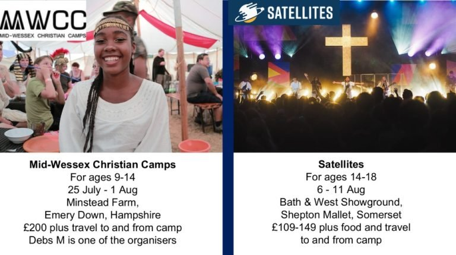

A place to find life & hope
We're an active, welcoming Baptist church in Thatcham — all ages, informal, and genuinely glad you're here. Whoever you are, there's a place for you with us.

Everyone's welcome here
We're a friendly, all-age church family that meets just behind Burdwood Surgery, a short walk from Thatcham station.
From tiny children to friends in their 90s, we're a real mix of ages, backgrounds and stories. Worship with us is modern and informal — there's no dress code and no need to know your way around. Come exactly as you are.
Above all, we long to be a place where everyone can find life and hope through Jesus — and to share that hope, warmly and without pressure, with the town we love.
Good news, at the centre of everything
We believe in one God — Father, Son and Holy Spirit. We know the Father's personal love shown to us through Jesus, who lived among us, died and rose again — bringing forgiveness, strength and hope. And we believe the Holy Spirit is real and active today, at work in ordinary lives like ours.
Placeholder link — the real PDF would be attached here.
Four things we hold onto
Everything we do grows out of these four commitments.
Worship
We gather to give God our praise, our attention and our lives — celebrating who he is together, with honesty and joy.
Relationship
We're built for community. We share life, carry each other's burdens and grow together as friends and family.
Serving
Faith rolls up its sleeves. We use our time, gifts and energy to serve one another and our wider community.
Sharing Good News
The hope we've found is worth passing on. We share the good news of Jesus with warmth, honesty and no pressure.
The best way to know us is to meet us
Words on a page only go so far. Why not join us one Sunday and see for yourself?